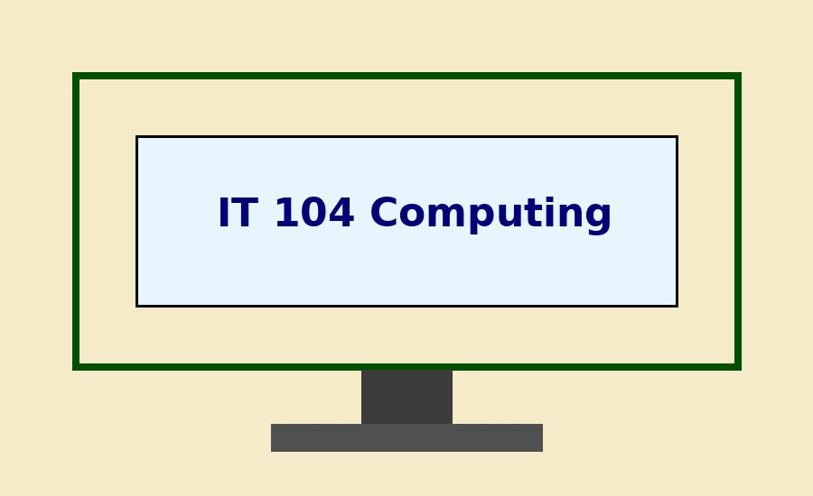

Objective
The primary Objective of the course is to introduce bacis concepts of IT
Textbook
Introduction to Computing Infotmation Systems
Evaluation Methods
Correct completion of project : 50%
Midterm Exam : 25%
Final Exam : 25%
Honor Code
Each Student has to complete his/her own work
Schedule
| Week | Topic |
|---|---|
| 1 | Information Literacy |
| 2 | Application and System Software |
| 3 | Data Communication and Networking |
| 4 | Database |
| 5 | Web Devlopment |
| 6 | Mobile Computing |
| 7 | Computer Security and Ethics |
| 8 | Future of Computing |